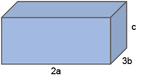

CAPÍTULO 2 - Monômios
Observe as figuras a seguir:

- Troque ideias com um colega e, no caderno, escrevam as expressões algébricas que representam os perímetros de cada uma das figuras.
- Essas expressões são formadas por quantos termos?

Expressões algébricas que apresentam um único termo, ou seja, que são constituídas pela multiplicação entre números e variáveis, em que as letras têm apenas números naturais como expoentes, são chamadas de monômios.
Em um monômio, podemos identificar duas partes:
Atenção!
Todo número real diferente de zero é um monômio.
O número zero é denominado monômio nulo.
Grau de um monômio
Observe os monômios a seguir:
- 5x2y3
- -10ab4c
Dizemos que o primeiro monômio é do 5.º grau, o segundo monômio é do 6.º grau e o terceiro, do 9.º grau.
Para determinarmos o grau de um monômio, devemos adicionar os expoentes das variáveis.
62
Monômios semelhantes
Observe os monômios a seguir:
- 12x2y3
- 7x2y3
Note que todos os monômios possuem a mesma parte literal. Quando isto ocorre, dizemos que os monômios são semelhantes.
Dois ou mais monômios são semelhantes quando têm a mesma parte literal.
Operações com monômios
Adição e subtração de monômios
Observe a figura a seguir.
Vamos obter o perímetro dessa figura adicionando os termos semelhantes.
Perímetro: 3x + 3x + 3x + x + x + x + x + x = 14x
Ao realizarmos uma adição algébrica entre monômios, adicionamos os coeficientes e mantemos a parte literal.
Esse processo é também chamado de redução dos termos semelhantes. Observe alguns exemplos:
- 4y + 6y - 3y = (4 + 6 - 3)y = 7y
- - ab + 10ab - 8ab - 3ab = (-1 + 10 - 8 - 3)ab = - 2ab
63
Encontre soluções
- Em seu caderno, copie e complete o quadro a seguir:
- No caderno, resolva as seguintes adições algébricas e indique o grau do monômio encontrado.
- 3xy + 12xy - 5xy
- - ab2 + 14ab2 - 7ab2 - ab2
- 1,3pq - 0,5pq + 4pq
- - 8x2y3 + 18x2y3 - x2y3
- Qual é o monômio que adicionado a -15ab3c resulta em - 22ab3c?
-
Em seu caderno, simplifique as expressões algébricas a seguir e calcule os seus valores numéricos, em que
x = 2 e y = - 3.- - 2xy - (- 5xy + 3xy - 8xy) - (xy + 4xy)
- 7x2y + 8x2y - (12x2y - 10x2y + 2x2y) - x2y
![Tabela de sete linhas e 3 colunas. Linha 1: Monômio, Coeficiente, Parte literal. Linha 2: 6ab e os outros dois espaços em branco. Linha 3: menos x elevado ao quadrado y elevado ao quadrado e os outros dois espaços em branco. Linha 4: menos 19ab elevado ao cubo c levado à quarta potência e os outros dois espaços em branco. Linha 5: xy sobre dois e os outros dois espaços em branco. Linha 6: menos 2 quintos m elevado à sexta np elevado à quarta potência e os outros dois espaços em branco. Linha 7: xyz e os outros dois espaços em branco.](../../resources/images/8ANO_U3_image/8.png)
Multiplicação de monômios
Observe os polígonos:
![Três figuras nomeadas de Figura 1, Figura 2 e Figura 3. A Figura 1 é um quadrado azul. Os lados medem 5x. A figura 2 é um retângulo amarelo. Ele mede 2ab na lateral esquerda e 4ab, na base. A Figura 3 é um losango azul, na horizontal, uma linha tracejada sai do vértice da esquerda em direção à base do losango. Uma outra linha tracejada sai do vértice da direita em direção também à base do losango. Uma linha nomeada de a liga na horizontal as duas linhas tracejadas. Outras duas linhas tracejadas partem, uma do vértice superior em direção à direita e a outra, do vértice inferior também à direita. Uma seta nomeada de b liga na vertical e à direita as duas linhas tracejadas.](../../resources/images/8ANO_U3_image/M8A_3-figurasdiferentes.png)
- Troque ideias com um colega e escrevam, no caderno, os monômios que representam as áreas de cada uma das figuras.
- Expliquem como podemos realizar a multiplicação entre dois ou mais monômios.
Observe, a seguir, outras multiplicações entre monômios.
- (- 5ab) ∙ (10ab) = [(- 5) ∙ (10)] ∙ (a ∙ a ∙ b ∙ b) = - 50a2b2
- (8x3y) ∙ (- 3x2y) = [(8) ∙ (- 3)] ∙ (x3 ∙ x2 ∙ y ∙ y) = - 24 x5y2
64
Encontre soluções
- Calcule, em seu caderno:
- (- 9x3) ∙ (11x2y)
- (7ab2) ∙ (- 8a3b2)
- (- 4ax) ∙ (- 6ax3)
- (pq) ∙ (- p2q5)
- (- 0,4xyz) ∙ (0,2x2yz4)
- Determine a área dos polígonos a seguir.
- Quanto mede o lado de um quadrado cuja área é igual 36m6n2?
- Resolva as seguintes expressões algébricas:
- 8a2b2 + (- 5ab) ∙ (3ab) -18a2b2
- (-12x2y) ∙ (- 3xy) - (- 4xy) ∙ (5x2y)
- - 4m2 + 5m (2m - 3m)
- - 8y ∙ (-10yz) - 3z ∙ (2y2)
- Escreva o monômio que representa o volume dos seguintes sólidos geométricos:
- 
-

- Observe o retângulo a seguir formado por quadrados iguais.
- Escreva o monômio que representa a medida do comprimento e da altura desse retângulo.
- Indique a área de cada quadrado.
- Escreva o monômio que representa a área total do retângulo.
- Indique a área do retângulo pintada de azul claro.
- Escreva um produto que permita calcular a área desse retângulo.

65
Divisão entre monômios
Observe o diálogo entre Márcia e Júlia:
- Troque ideias com um colega e expliquem como vocês acham que Júlia pensou para resolver a divisão. No caderno, anotem as conclusões a que vocês chegaram.
Observe a seguir outras divisões entre monômios:
Encontre soluções
- Calcule em seu caderno:
- (-121abc) : (11a)
- (- 81x3y4) : (- 9xy2)
- (144m5n3p2) : (2mnp)
- (63xy2) : (-7y)
- (2,25b5c4) : (5b2c)
- Determine a medida da base de um retângulo em que a altura mede 5x e sua área é igual a 75x3y2.
- O perímetro de um hexágono regular mede 78xy. Qual é a medida do lado deste hexágono?
- Qual é o monômio que multiplicado por 7x4y3z tem como resultado 98x7y5z2?
- O monômio xy representa a área de um triângulo equilátero cuja altura é igual a x. Escreva o monômio que representa o perímetro desse triângulo.
66
Potenciação de monômios
Observe o diálogo entre João e Marcos.
- Troque ideias com um colega e expliquem como vocês acham que Marcos pensou para resolver a potenciação. No caderno, anotem as conclusões a que vocês chegaram.
Observe outros exemplos:
- (-2x3y4)3 = (-2)3 ∙ (x3)3 ∙ (y4)3 = - 8x9y12
- (-11m5pq3)2 = (-11)2 ∙ (m5)2 ∙ (p)2 ∙ (q3)2 = 121m10p2q6
Encontre soluções
- Calcule em seu caderno:
- Calcule no caderno:
- o quadrado de ;
- o cubo de ;
- a quarta potência de ;
- a quinta potência de .
-
Em seu caderno, determine o volume dos sólidos geométricos a seguir:
-